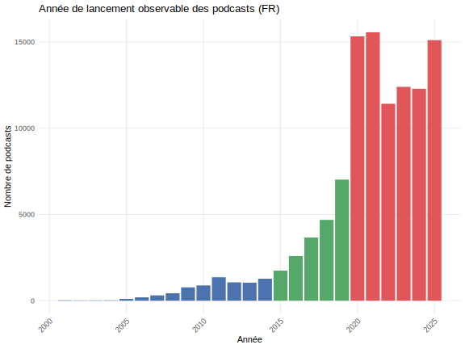
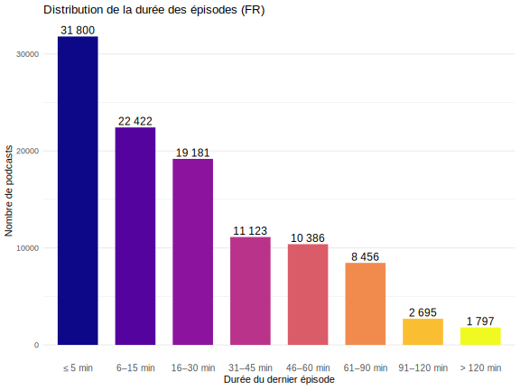

Point d’étape de la thèse d’Anouck Delfino
(Janvier 2026)
Introduction
1. Les arborescences
2. Radio France
2.1. Vue d’ensemble
2.2. Les mots-clés
On utilise les mots-clés renseignés pour chaque émission pour faire un treemap. La taille de chaque rectangle est proportionnelle à sa fréquence d’apparition.
On peut ensuite se rendre compte à quel point une émission donnée déforme cette structure.
Il est ausi possible de projeter une émission dans cette structure d’ensemble pour voir où elle se concentre.
2.3. Les grandes thèmes
On utilise les descriptions des emissions
2.4. Les invités
On peut d’abord faire un réseau des émissions selon qu’elles partagent des invités.
On peut également distinguer les emissions par type d’invites.
Enfin, on peut distinguer les sections CNU selon leur présence radiophonique.
2.5. Les liens externes
3. Les podcasts
En ce qui concerne les podcasts, les données les plus extensives (en nombre de podcasts recensés) et les plus précises (en nombre de variables renseignées) sont celles du Podcast Index. Le portail recense actuellement plus de 4.5 millions de podcasts toutes langues confondues.


